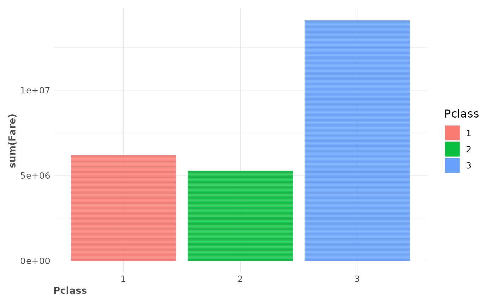
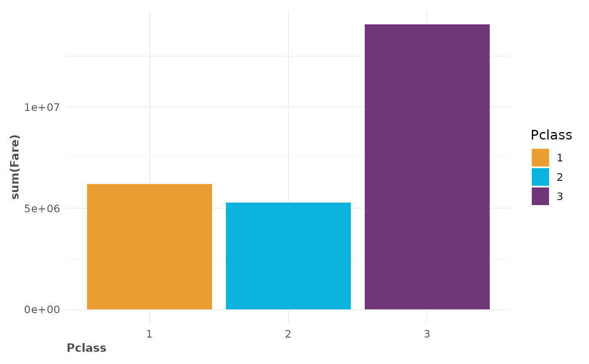
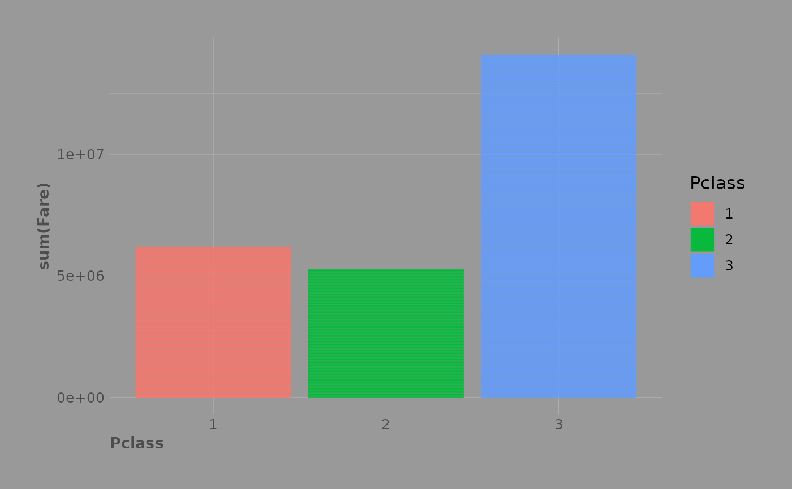
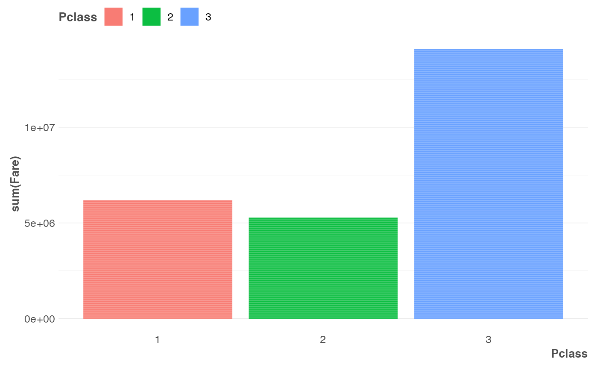
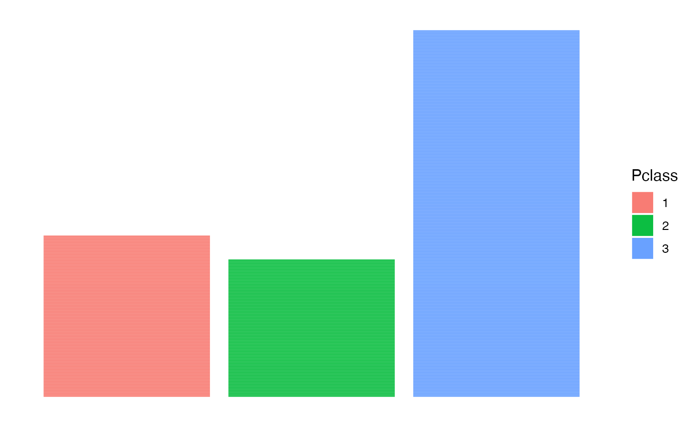

Based on hrbrthemes' theme_ipsum and customized for lares usage.
With this team you can custom the colour and fill palettes, global colour parameters,
major and minor grids, legend, font and font size.
Usage
theme_lares(
font = Sys.getenv("LARES_FONT"),
size = 12,
main_colour = "darkorange3",
hard_colour = "black",
soft_colour = "grey30",
plot_colour = "transparent",
panel_colour = "transparent",
background = "transparent",
no_facets = FALSE,
legend = NULL,
grid = TRUE,
axis = TRUE,
clean = FALSE,
mg = 9,
pal = 0,
palette = NULL,
which = "fc",
quiet = TRUE,
...
)Arguments
- font, size
Character and numeric. Base font family and base size for texts.
Arial Narrowis set by default when the library is loaded; you may change it withSys.setenv("LARES_FONT" = "X")or by using this parameter manually. Iffontis "ignore" or NA, it'll be ignored.- main_colour, hard_colour, soft_colour, plot_colour, panel_colour
Character. Main colours for your theme.
- background
Character. Main colour for your background. Overwrites
plot_colourandpanel_colour.- no_facets
Boolean. Suppress facet labels?
- legend
Character. Legend position:
"top","right","bottom", or"left"You can also set toFALSEor"none"to suppress legend.- grid
Character or Boolean. Use
TRUE/FALSEor a combination ofX,x,Y,yto enable/disable minor and major grids.- axis
Character or Boolean. Use
TRUE/FALSE,xorYto enable X and/or Y axis lines.- clean
Boolean. Suppress grids and axis? Overwrites both parameters.
- mg
Numeric. External margins reference.
- pal
Integer.
1for fill and colour palette,2for only colour palette,3for only fill palette,4for personal labels-colour palette.0for nothing.- palette
Character vector. Pass a vector with HEX colour codes to use a custom palette. If you pass a named vector, the name values will be used as fill and the values will be used as colour.
- which
Character. When
pal = 3, select which colours should be added with the custom colours palette: fill, colour, text (fct) - first letters.- quiet
Boolean. Keep quiet? If not, informative messages will be shown.
- ...
Additional parameters.
Why Arial Narrow?
First and foremost, Arial Narrow is generally installed by default or readily available on any modern system, so it's "free"-ish; plus, it is a condensed font with solid default kerning pairs and geometric numbers.
See also
Other Themes:
gg_fill_customs(),
lares_pal(),
plot_palette()
Examples
# \donttest{
data(dft)
library(ggplot2)
p <- ggplot(dft, aes(x = Pclass, y = sum(Fare), fill = Pclass)) +
geom_col()
p + theme_lares()

p + theme_lares(pal = 1)

p + theme_lares(background = "#999999", mg = 25)

p + theme_lares(legend = "top", grid = "Yy")

p + theme_lares(clean = TRUE)

# }